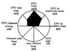
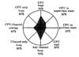
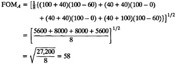
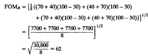
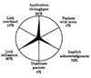
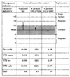
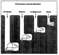

| Previous | Table of Contents | Next |
where x2n+1 is the same as x1. The FOM always lies between 0 and 100, and its average value over a large number of systems is expected to be 50%. The following example illustrates the idea of FOM.
| System | x1 | x2 | x3 | x4 | x5 | x6 | x7 | x8 |
|---|---|---|---|---|---|---|---|---|
| A | 100 | 60 | 40 | 0 | 40 | 0 | 40 | 60 |
| B | 70 | 30 | 40 | 30 | 70 | 30 | 40 | 30 |
The Kiviat graphs for the two systems are shown in Figures 10.22 and 10.23, respectively. Notice that the Kiviat graph for System B is closer to a star shape than that of System A. The same conclusion can be obtained using FOM as shown next.

FIGURE 10.22 Kiviat graph for System A.

FIGURE 10.23 Kiviat graph for System B.
The FOM for System A is

Similarly, the FOM for System B is

System B has a higher figure of merit than System A, and hence, it is considered better.
This FOM has several known problems. Some examples follow.
Although most of the literature on Kiviat graphs is on data processing systems, the idea of a Kiviat graph can be easily extended to networks, databases, and other types of computer systems. The following example illustrates their applications to computer networks.
Example 10.4 Table 10.2 shows HB and LB metrics that can be used to draw Kiviat graphs for computer networks. Six of these metrics are used in a sample Kiviat graph in Figure 10.24.
| TABLE 10.2 Metrics for Kiviat Graphs of Networks | ||
|---|---|---|
| HB Metrics | LB Metrics | |
| Application throughput | Application response time | |
| Link utilization | Link overhead | |
| Router utilization | Routing overhead | |
| Percentage of packets not requiring retransmission | Percentage of packets duplicated | |
| Percentage of packets with implicit acknowledgment | Percentage of packets delivered with error | |

FIGURE 10.24 Kiviat graph for a computer network.
The Schumacher chart is another reporting format that has been suggested in literature. However, since this chart is not widely used, it is described only briefly. Like a Kiviat graph, a Schumacher chart can be used for periodic performance reporting to show daily, weekly, monthly, quarterly, or yearly resource usage. Any number of performance metrics can be plotted in tabular form, as shown in Figure 10.25. The values are normalized with respect to the long-term mean and standard deviations. Any observations that are beyond the mean plus or minus one standard deviation need to be explained. The performance metrics can also be grouped into several management categories and each category can be presented on a separate chart. Other information about the long-term behavior of the metrics can also be shown on the chart.

FIGURE 10.25 Schumacher chart.
Even if the performance analysis is correctly done and presented, it may not be enough to persuade your audience—the decision makers—to follow your recommendations. The list shown in Box 10.2 is a compilation of reasons for rejection heard at various performance analysis presentations. You can use the list by presenting it immediately and pointing out that the reason for rejection is not new and that the analysis deserves more consideration. Also, the list is helpful in getting the competing proposals rejected!
There is no clear end of an analysis. Any analysis can be rejected simply on the grounds that the problem needs more analysis. This is the first reason listed in Box 10.2. The second most common reason for rejection of an analysis and for endless debate is the workload. Since workloads are always based on the past measurements, their applicability to the current or future environment can always be questioned. Actually workload is one of the four areas of discussion that lead a performance presentation into an endless debate. These “rat holes” and their relative sizes in terms of time consumed are shown in Figure 10.26. Presenting this cartoon at the beginning of a presentation helps to avoid these areas.

FIGURE 10.26 Four issues in performance presentations that commonly lead to endless discussion.
| Previous | Table of Contents | Next |
){kind=link}
){kind=link}
){kind=link}
){kind=link}
){kind=link}
){kind=link}
){kind=link}
){kind=link}
){kind=link}
){kind=link}